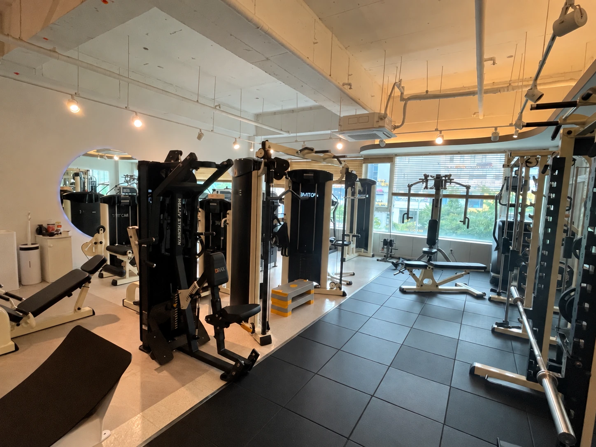

1:1 PT 10회
700,000원회당 70,000원 · 부가세 별도
모티브짐 / 성복동 PT 가격
SEONGBOK 1:1 PT PRICE
성복역 4번 출구 모티브짐의 1:1 PT 가격과 수업 구성을 한 페이지에 정리했습니다. 처음이라면 50분 체험 PT로 몸의 상태와 지도 방식을 먼저 확인할 수 있습니다.

1:1 PERSONAL TRAINING
수업은 현재 움직임과 체력, 운동 경험, 목표를 확인한 뒤 개인별로 계획합니다. 표시된 금액은 2026년 10월 기준이며 부가세와 이용 조건을 함께 확인해 주세요.
회당 70,000원 · 부가세 별도
회당 65,000원 · 부가세 별도
회당 60,000원 · 부가세 별도
처음 방문자를 위한 체험 수업
결제 전 네이버 예약 또는 전화 상담에서 최종 금액, 이용 기간, 일정 변경과 환불 조건을 확인해 주세요.
WHAT IS INCLUDED
같은 목표라도 출발점은 다릅니다. 첫 대화와 움직임 확인을 바탕으로 수업을 시작하고, 몸의 반응과 수행 기록에 따라 강도와 동작을 조정합니다.
생활 패턴, 운동 경험, 불편한 움직임과 원하는 변화를 듣습니다.
현재 가능한 움직임에서 시작해 근력과 체력을 단계적으로 쌓습니다.
수업 중 몸의 반응과 수행 과정을 확인하고 다음 계획을 조정합니다.

CHOOSING YOUR START
10회는 지도 방식과 기본 동작을 익히며 짧게 시작하려는 분에게 적합합니다.
20회는 근력과 체력, 운동 습관을 일정 기간 함께 만들어가려는 분에게 권합니다.
30회는 오랜 운동 공백 뒤 단계적인 변화와 장기적인 기록 관리가 필요한 분에게 적합합니다.
정답은 횟수보다 현재 상태와 목표에 따라 달라집니다. 체험 수업에서 몸의 상태와 일정까지 확인한 뒤 선택하세요.
PRICE FAQ
아닙니다. 10·20·30회 PT 금액에는 부가세가 별도로 적용됩니다. 결제 전 최종 결제금액을 안내받아 확인해 주세요.
아닙니다. 체험 수업에서 지도 방식과 운동 환경을 확인한 뒤 결정할 수 있습니다.
토요일과 일요일은 10:00~18:00에 운영합니다. 실제 예약 가능 시간은 네이버 예약 또는 전화로 확인해 주세요.
등록 전에 계약서의 이용 기간, 일정 변경, 당일 취소와 환불 산식을 확인해 주세요. 결제금액과 횟수는 계약서와 영수증에 명확히 기록합니다.